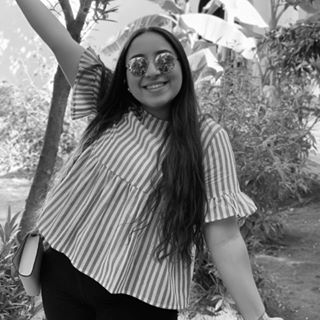

Hello, I am Delia ! 🌸
I am 18 years old and I am a student in the first year of the ESSEC Business School's BBA. Welcome in my profile ! Here, I am going to try to describe you who I am, what are my passions, my hobbies, and what makes my personality.
Where I come from...
My Moroccan Origins 🇲🇦

Do you know the City of Oujda in Morocco? Located northeast of the kingdom, it is still a city very traditional and conservative, that is tending to develop. This city embodies, between traditions and modernism, my mother breeding line.
Discover Oujda
My Cultural influences from Brittany

Born in Brest into a family of sailors, my stepfather, who raised me, have transmitted to me the taste for travel and discovery of new cultures. And what about gastronomy Made in Breizh ! (We won't say anything about the weather... 🌧🌪)
Brest 2020
Algeria 🇩🇿

A part of my family find her roots in Algeria, more precisely in Mostaganem. Although less close to this culture, especially since the border was closed, I remain impressed by their patriotism, which they claim at the slightest opportunity...
MostaganemMy passions in life...
Spain 💃🇪🇸

After many travels to Spain, with my family and also with school, I fell in love with this country, its language and its culture generally. My exchange to Salamanca, in a local family, was in this way founding. It is a country with numerous influences and a way of life so specific that give it all its charm.
Discover Spain
The Drama 🎭

The practice of drama, in addition to make me discover and love an artistic universe that I didn't know before.
Cooking 🥘

Morocco, Algeria, Brittany, these three cultures have brought up my education. Therefore, my cooking represents this multiculturalism. Sweet or savoury, appetisers or good dishes, sophisticated or traditional, no matter I cook everything and I love it. SO, I spend a lot of time in the kitchen, either to test new recipes or to improve the ones I already know.
My Hobbies...
The Archery 🏹

Paused this year, the achery allows me to improve my patience and my concentration.
European Statistics Competition 🧮

I really like math. So, in the final year, I was part of the team that represented my high school during the European Statistics Competition. Finally, we arrived at the second french stage.
My application in aid associations...
ESSEC España
ESSEC España contributes to the sharing of Hispanic culture within ESSEC. As a secretary of the organisation I participate to the organization of meetings, the planning management and also the management of the events.
The Restos du Coeur

As a volunteer in the Restos du coeur, I participate with friends in the organization of distributions. An extraordinary, intergenerational atmopshere, like here during the distribution of toys in partnership with the Lions Club. Lots of good humor and exchanges with beneficiary families, despite the situation they may encounter.
Maison des Lycéens

During the high school, I was the secretary of the "Maison des lycéens". It was like the BDE in business schools. I organized with all the team the diferent events of the school year that punctuate the life of the establishment such as "Zola's got talent", valentine's day, the prom, the carnaval or the ghost house for Halloween. I contributed to maintaining contact with local partnerships (Town hall, department), the organisation of meetings, the planning management of the association and the management of the events.
My qualities
-
Dynamic ⚡️
-
Ambitious 🧗♀️
-
Positive 😎
My qualifications
-
French 🇫🇷
Native language
-
Arabic 🇲🇦
Mother tongue
-
English 🇬🇧
Intermediate
-
Spanish 🇪🇸
Fluent